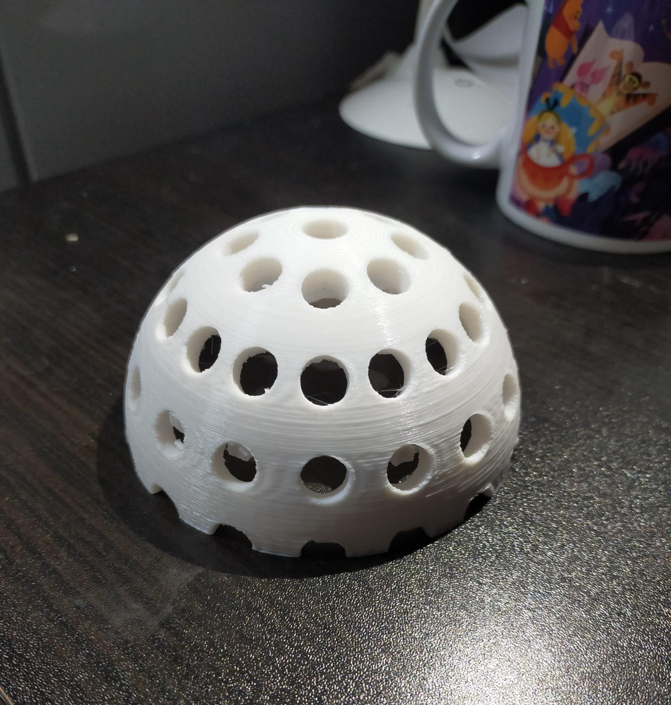
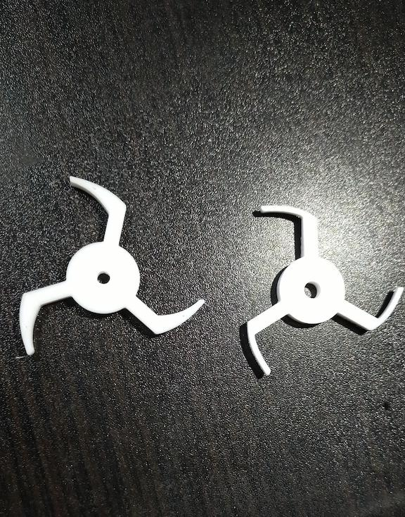
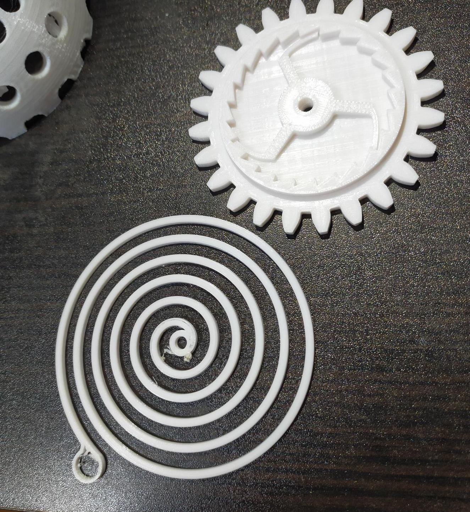

第７回
１班のテーマ
「光を用いて人をポジティブにするもの」
テーマの由来は
第６回の人物②を参照
完成品は
第８回を参照
班メンバーからのアドバイス
- ミラーボールは分割してから印刷した方が失敗少なく、サポートも取りやすいのでは
→上下半分に分けて印刷することに。
- ミラーボールだから回せたらいいのに
→天井の電気に取り付けるなら、どうやって動力源を確保する？
モーターを買って取り付ける？紐で引っ張る？歯車を使う？
→ゼンマイで動かせないか？
- 別に電球取り付けて、下に置くタイプでもいいのでは？
途中経過
- （2021.11.15)いくつかのパーツを１つのSTLファイル→g-codeファイルにして印刷しようとしたが、一つのパーツが失敗すると前パーツの印刷がストップしてしまう。
ケチなことはせず、１パーツ＝１データで出力する事を学ぶ。

- (2021.11.18)ゼンマイのひねるパーツ作成。最初、ギザギザに引っ掛けて逆流しないようにするパーツを太く(4mm幅)で作ったら、しならなくなりギザギザの中で回らなくなった。
→先端部分の幅を2mmに減らしたら、しなってうまく回るようになった。

- これらを繋げればゼンマイになるはず

- ゼンマイパーツの動作確認動画はこちら（YouTubeにアップした動画）
１班のメンバーの作品リンク
前の画面に戻る